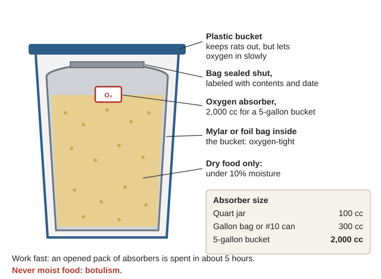
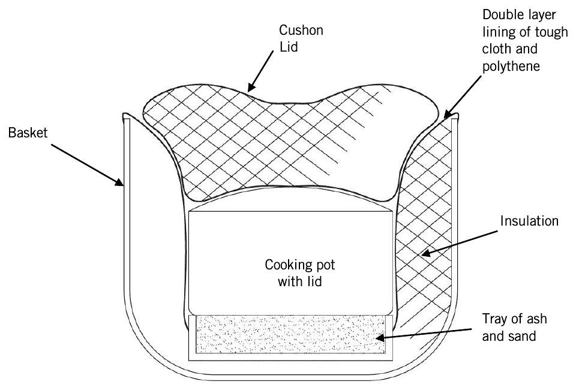
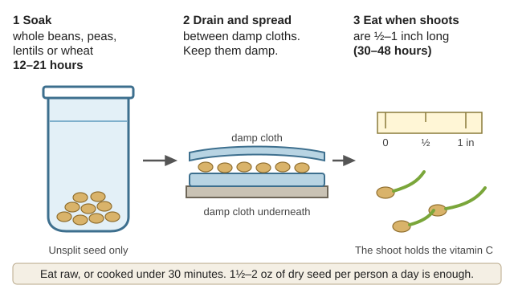
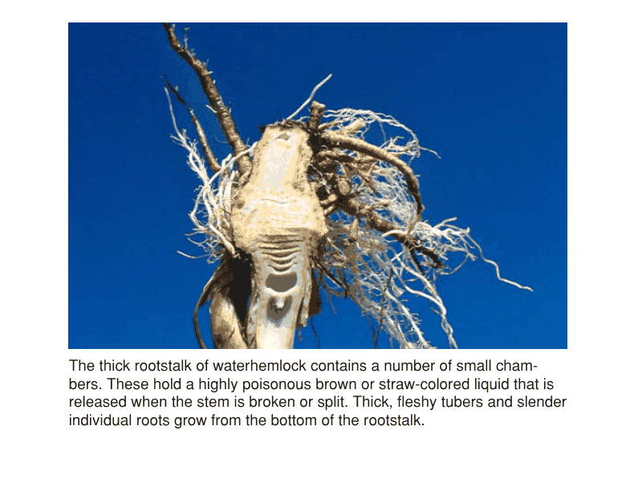
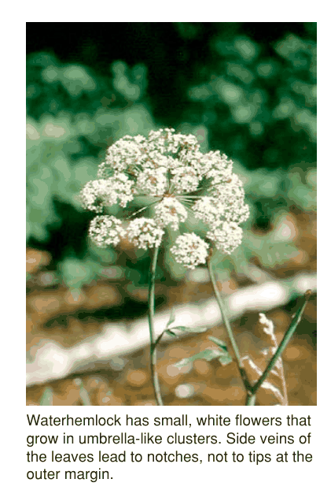
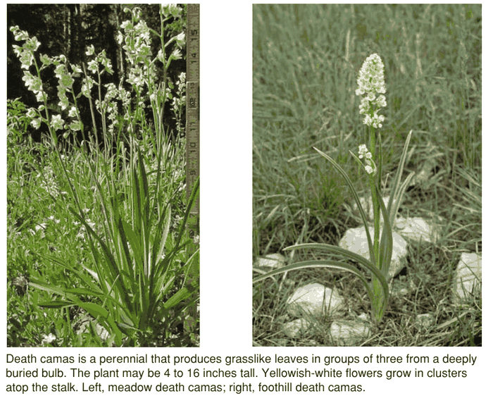

Guides › Food · Emergency · Index A–Z
How to keep a household fed for a year or more with no stores: how much food people need, what to store and how to keep it good for decades, how to share it out fairly, how to prevent the hunger diseases, how to refeed someone who is starving, how to keep babies alive, and what wild food the Illinois Valley gives month by month. The books are in Food-Security\ (Storage-Rationing, Nutrition-Deficiency, Foraging). Growing, milling and cooking staples are in Food-From-Scratch\, and cellars and drying in Food-Storage\.
⚠️ Rules that prevent the worst outcomes
- Grain alone is not enough. Stored wheat, rice and beans have almost no vitamin C. Store vitamin C tablets and learn to sprout seeds. Under 10 mg a day can cause life-threatening scurvy within months (BYU, p. 1).
- Never oxygen-pack or vacuum-seal moist food. It can grow botulism. Dry food under 10% moisture only (USU, p. 97).
- Feed a starving person slowly. Big meals all at once can kill them.
- Babies: breast milk first. Never give plain animal milk under 6 months (WHO 2004, p. 40).
- Never cut the share of children, pregnant or nursing women, or the sick first.
- Eat no wild plant you have not identified for certain. Death camas and water hemlock grow right here and kill.
Daily needs (US official tables; "active" there only means walking over 3 miles a day — wood, water and hand-digging are heavier, so plan from the top of each range) (Dietary Guidelines, pp. 153–154; protein p. 146, p. 148):
| Person | Calories a day | Protein a day |
|---|---|---|
| Man, 19+ | 2,200–2,600 inactive; 2,800–3,000 active | 56 g |
| Woman, 19+ | 1,600–2,000 inactive; 2,000–2,400 active | 46 g |
| Teen boy | up to 3,200 | 52 g |
| Child 9–13 | — | 34 g |
| Child 2–8 | 1,000–2,000 | 13–19 g |
| Pregnant | +340 (2nd trimester), +452 (3rd) | 71 g |
| Nursing | +330 (first 6 months), +400 after | 71 g |
Plan on 2,100 kcal per person per day, averaged over all ages, with at least 10–12% from protein and 17% from fat (WHO 2002, p. 6; Sphere, p. 228) — at least 53 g protein and 40 g fat (Sphere, p. 260).
Adjust it (WHO 2002, pp. 11–13):
What 2,100 kcal looks like: 400 g cereal (about 2 cups dry), 60 g beans, 25 g oil (2 Tbsp), 50 g fortified flour, 15 g sugar, 5 g iodized salt = 2,113 kcal, 58 g protein (WHO 2002, p. 14). For a year: about 322 lb grain, 48 lb beans, 20 lb oil, 12 lb sugar, 4 lb salt per person (our arithmetic).
Handy number: 790 g (1.74 lb) of dry wheat gives 2,600 kcal and 103 g protein — so 1 lb of dry grain ≈ 1,500 kcal (Kearny, p. 90).
📚 Go deeper: Food and Nutrition Needs in Emergencies, p. 11 — adjusting for cold, sickness and work; Dietary Guidelines, p. 153 — calories by age and activity.
BYU's one-year list for one adult (BYU, p. 1), and the same for 2 adults + 2 children under 8, who count as about 3 adults (children under 8 need about half — USU, p. 65):
| Item | 1 adult | Household (×3) | Sealed shelf life |
|---|---|---|---|
| Wheat | 132 lb | ~400 lb | 30+ years |
| White rice | 65 lb | ~195 lb | 30+ years |
| Rolled oats | 29 lb | ~87 lb | 20 years |
| Pasta | 21 lb | ~63 lb | — |
| Beans, peas, lentils | 62 lb | ~186 lb | 25 years |
| Nonfat dry milk | 60 lb | 180 lb | 15 years (cool) |
| Sugar or honey | 70 lb | 210 lb | 30+ years |
| Iodized salt | 8 lb | 24 lb | 30+ years |
| Cooking oil | 2 gallons | 6 gallons | about 1 year |
| Butter (frozen), peanut butter | 6 lb each | 18 lb each | — |
That is roughly 2,200 kcal a day (our rough arithmetic). Also: baking soda, baking powder, yeast, can openers, a grain grinder (hand mill and metate, FAO p. 17), and recipes that use only stored food. USU's simpler rule: about 300 lb of grain per person per year, 25–60 lb of it rice (USU, p. 68).
Fill the gaps (rule of thumb): vitamin C tablets (multivitamins keep less long — BYU), vitamin D or cod-liver oil, extra iodized salt, whole grains and beans (not only white rice and flour), seeds to sprout, and a plan for fat once the oil goes rancid (lard, oil seeds, animals).
📚 Go deeper: BYU Longer-Term Food Storage — the one-page table; USU Food Storage for Emergencies, p. 65 — wheat, rice, oats and beans chapter by chapter.
Heat is the main enemy. Keep food at 40–70 °F. In BYU research, wheat stayed good 25 years in a cool basement but only 5 in a hot garage or attic. Keep containers off bare concrete (USU, p. 31). Our summers pass 100 °F and sheds get hotter — use the coolest inside room or a cellar (Root Cellar guide).
Keep grain dry. Above 12% moisture it starts to break down, above 15% it molds, at 20% bacteria grow. Freezing does not harm it (USU, p. 66). Seal it in the dry season (July–September), not in wet winter air (rule of thumb).
Packing with oxygen absorbers (USU, p. 98):

The Mylar bag keeps oxygen out and the bucket keeps rats out; the absorber goes in just before you seal (a diagram drawn for this guide).Bugs (USU, p. 95): oxygen held under 1% for 12 days kills every stage, so Mylar with absorbers kills weevils (the common grain pests, FAO p. 78). Dry ice: 3–4 inches of grain in a bucket, 2–3 oz crushed dry ice, fill, lid loose 30 minutes, then seal (p. 66). Freeze 2–3 days, warm a day, freeze again. Heat in a 130 °F oven for 30 minutes — but heated grain will not sprout, so never heat seed grain.
| Sealed, low-oxygen | Keeps (USU) |
|---|---|
| Wheat | good bread after 32 years (p. 66) |
| White rice | 25–30 years (p. 69) |
| Dry beans | 20–30 years (p. 49) |
| Rolled oats | up to ~30 years (p. 73) |
| Nonfat dry milk | 3–5 years cool, as little as 3 months hot (p. 52) |
| Brown rice, whole-wheat flour, cornmeal, nuts, pearled barley | not for long storage — oils go rancid; store whole grain and grind as needed (p. 32) |
Rotate by eating it. Cooking one day a week only from storage rotates everything about every 7 years. Before throwing old food out, cook a sample — the stale smell on opening often fades. Old beans that won't soften: add ⅛ tsp baking soda per cup (BYU, p. 1).
📚 Go deeper: USU, p. 97 — oxygen removal and the botulism warning; USU Grain Insect Control, p. 11 — temperature, food-grade containers, container sizes.
Work out the ration (rule of thumb):
Example (our arithmetic): 3 adult-equivalents, 13 months (395 days). 900 lb of grain ÷ (3 × 395) ≈ 0.76 lb per person per day ≈ 1,100 kcal — half the need. Start the garden and the rabbits and chickens now.
Keep it fair (rule of thumb, except where cited):
If this goes wrong: one person losing weight faster → check they really eat their share (children and old people often give theirs away). Stores shrinking faster than the log → reweigh, check for rats and spoilage before suspecting people.
📚 Go deeper: Sphere, p. 235 — fair distribution; WHO Management of Nutrition, p. 74 — rations, fuel, milling (scanned, not searchable); Kearny, p. 84 — a homemade grain grinder.
A fuel shortage is a nutrition problem: one refugee pellagra outbreak happened partly because people had no fuel to cook the beans they were given (WHO Pellagra, p. 29).

A haybox: insulation packed all around the pot, a tray under it and a thick cushion on top, so no heat escapes (Practical Action, p. 2).📚 Go deeper: USDA Homemade Fireless Cookers, p. 4 — building one; Firewood guide — making the wood count.
These come from eating the same few stored foods for months, and each is easy to prevent.
| Disease | Missing | Signs | Prevent with |
|---|---|---|---|
| Scurvy | Vitamin C | Tired, aching legs → swollen bleeding gums, tiny bleeds at hair roots, swollen joints | Sprouts, rose hips, berries, raw greens, potatoes, tablets |
| Beriberi | Thiamine (B1) | Numb, burning, weak legs; or swelling and heart failure | Whole wheat, oats, beans, peas |
| Pellagra | Niacin | Dark, rough, sunburn-like rash on hands, neck, face (drawing); diarrhoea; depression or confusion | Lime- or ash-treated corn, beans, peanuts, meat |
| Rickets | Vitamin D | Swollen wrists and rib ends ("beads"), bowed legs, late walking (drawing) | Sun on bare skin, eggs, liver, fish, cod-liver oil |
| Goitre | Iodine | Swelling at the front of the neck (drawing); miscarriage; brain damage in babies | Iodized salt, seafood, kelp |
Scurvy (WHO Scurvy, pp. 15–17): 10 mg of vitamin C a day prevents and cures it; gums improve within about 2 weeks. Rose hips and many berries have over 300 mg per 100 g; cooking destroys it; breast milk covers a nursing baby (p. 33).
Sprouting for vitamin C (WHO Scurvy, pp. 35, 50; Kearny's sprouting drawing; photos):

Soak, spread between damp cloths, eat when the shoots are ½–1 inch (a diagram drawn for this guide).Beriberi can appear within 2–3 months on white rice or white flour (WHO Thiamine, p. 14). Babies nursed by deficient mothers can die within hours, usually at 1–3 months old (p. 22). Don't over-wash rice or pour off its water. Strong tea, raw fermented fish and molds in damp food block thiamine (p. 17).
Pellagra comes from corn-heavy diets with untreated corn (WHO Pellagra, p. 13); one outbreak began 4 months after peanuts were dropped from a ration. If corn is a staple, nixtamalize it (FAO, p. 19; Food from Scratch) and eat beans or meat with it.
Rickets and our winter sun: 10–15 minutes of sun on a child's bare skin daily prevents it. Treatment: 5,000 IU vitamin D daily for 4–6 weeks, then 1,000 IU daily for 6 months, usually from fish-liver oil (WHO Management of Nutrition, p. 46). Rule of thumb: at 42° N the November–February sun is too weak to make vitamin D, and the valley is often cloudy — store cod-liver oil or vitamin D, and get children into the summer sun.
Iodine: adults need about 150 µg a day (WHO, pp. 36–37), and 250 µg when pregnant or nursing (WHO 2007). About ½ teaspoon of US iodized salt gives roughly 150 µg — you don't need more salt than that. The Pacific Northwest was historically part of the US "goitre belt" (rule of thumb) — store iodized salt sealed, dry and dark, and use fish and kelp from the coast.
📚 Go deeper: WHO Scurvy, p. 35 — the famine sprouting method; WHO Thiamine, p. 19 — forms of beriberi; WHO Pellagra, p. 8 — the rash and outbreaks; Where There Is No Doctor, p. 24 — goitre.
Recognize it (WHO Management of Nutrition, pp. 25–26; malnutrition; signs in children, mild to severe):
Refeed low and slow:
Note: these manuals are from 1999–2000; WHO updated its guidance in 2013, including some drug doses. F-75 and ReSoMal are still used — leave the drugs to someone trained.
📚 Go deeper: WHO Severe Malnutrition, p. 21 — F-75 and F-100 recipes and charts; Where There Is No Doctor, p. 6 — recognizing malnutrition; WTND ch. 21, p. 12 — malnourished children.
Breastfeeding first (WHO 2004, pp. 21–23):
If the milk has stopped or the mother is gone:
Babies 6–24 months:
📚 Go deeper: WHO Infant Feeding in Emergencies, p. 21 — keeping breastfeeding going; A Book for Midwives, p. 7 — cup feeding removed milk; Where There Is No Doctor, p. 14 — the first 6 months.
📷 Not sure what it is? Photograph it with the plant and mushroom identifier (under Tools). It suggests names and flags poisonous groups, but it's often wrong: confirm every feature here before you eat or use anything.
What the Takelma ate here. The Takelma people lived along the middle Rogue and south toward the Illinois River (Sapir 1907, p. 3). Their staple was the "black acorn" (Sapir, p. 8; California black oak; photo), pounded, sifted, leached with hot water on clean sand and boiled as mush (Sapir, p. 9). Camas (photo) was pit-roasted on alder over hot stones, sometimes for days, then mashed into cakes for winter. Manzanita berries (flowers and berries) were pounded to flour with sugar-pine nuts; tarweed and sunflower-type seeds were parched and ground. They also ate madrone berries, pine nuts, salmon, steelhead, trout, crawfish and freshwater mussels.
Month by month (compiled from several books; dates shift 2–4 weeks with elevation and weather):
| Months | Gather | Notes |
|---|---|---|
| Dec–Feb | Bigleaf maple sap (tapping); stored nuts; rose hips (wild rose); cattail roots; first miner's lettuce and chickweed | Sap runs on freeze–thaw days (OSU, p. 2); Saunders, p. 161 |
| Mar–Apr | Nettle tops (drawing), miner's lettuce, dock, cattail shoots, morels (especially after a burn) | Young nettles before flowering (OSU, p. 2); morels |
| Apr–May | Mark camas while it blooms (camas vs. death camas) | Death camas blooms in May at about 1,400 ft — our elevation (PNW 104, p. 2) |
| Jun–Aug | Wild strawberry, thimbleberry, serviceberry, manzanita berries, Oregon grape (July–Aug) | NRCS Manzanita, p. 1; Oregon grape (drawing) |
| Aug–Sep | Blackberries; salal; huckleberries up high; blue elderberry (cooked only); hazelnuts; sugar pine nuts | Salal, p. 75; huckleberry, p. 126 (drawing, p. 125); hazelnuts in early autumn (NRCS) — Food from Scratch says June–July, so start looking in summer |
| Sep–Nov | Acorns (black oak, white oak, tanoak); chinquapin; wapato from ponds; chanterelles after soaking rains; rose hips (photos); abandoned-orchard fruit | Wapato, p. 1; Mushroom guide |
Leaching acorns, roasting camas and using cattail: Food from Scratch.
📚 Go deeper: Sapir, Notes on the Takelma, p. 8 — local foods and how they were made; UCCE Foods from the Tanoak Forest, p. 2 — acorn processing; USFS Special Forest Products, p. 75 — berries and shrubs with seasons.
🌰 How the first peoples did it, step by step (acorns, camas, pinole, salmon, the year's round): Skills of the Valley's First Peoples.
📷 Not sure what it is? Photograph it with the plant and mushroom identifier (under Tools). It suggests names and flags poisonous groups, but it's often wrong: confirm every feature here before you eat or use anything.

Western water hemlock: the thick rootstalk is hollow, with cross-walls making chambers full of poisonous juice (AIB 415, p. 110).
Water hemlock flowers: white umbrellas like the rest of the carrot family; leaf side veins run to the notches, not the tips (AIB 415, p. 109).
Death camas in bloom: yellowish-white flower clusters above grass-like leaves; skip every white or cream-flowered plant (AIB 415, p. 35).If someone may be poisoned: death camas causes drooling, mouth numbness, vomiting, weakness, confusion and an irregular heartbeat 1–8 hours after eating (PNW 104, p. 2). Keep them warm, on their side if drowsy, watch their breathing, and keep a piece of the plant (rule of thumb). See the Field Care guide.
📚 Go deeper: PNW 109 Western Waterhemlock, p. 5 — look-alikes side by side; USDA Plants Poisonous to Livestock, p. 23 — bracken; PNW 104, p. 2 — death camas bloom time and symptoms.
📚 Go deeper: WHO 2004, p. 40 — why no animal milk before 6 months; WHO Severe Malnutrition, p. 21 — the feeding methods that still hold.
Look before you try it. 🖼️ = drawings in the books on this drive; 📷 = photos in the offline Wikipedia.
Storing, grinding and cooking
Hunger diseases and starvation
Wild foods of the valley
The deadly look-alikes